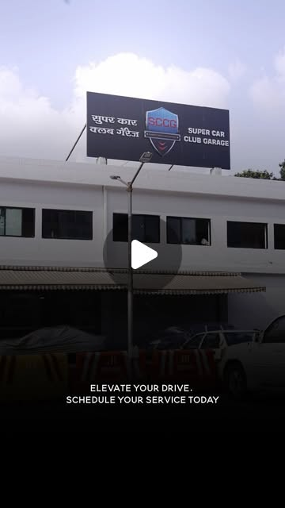

CP.03 · Case study
Auto & luxury.
Cinematic social content for the automotive world — supercar services shot like film trailers for Super Car Club Garage, and showroom storytelling plus creator campaigns for KIFS Volvo.
AutomotiveReelsProductionSocial
Super Car Club Garage
Ferrari & Lamborghini services, vintage restorations, and rally coverage — directed and produced as reels.

KIFS Volvo
Showroom videos and creative reels for vehicles like the Volvo XC90, plus creator onboarding for YouTube campaigns.